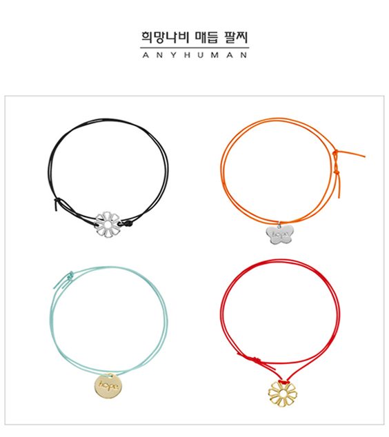

희망나비 팔찌

구매하러 가기
꽃 모양의 참은 ‘코스모스’ 코스모스의 꽃말은 ‘소녀의 숨결’ 나비 참과 원에 새겨진 ‘희망(HOPE)’ 나비모양 참은 위안부 할머니들의 꽃같은 시절을 되돌려 달라는 뜻을 담아 제작하였음. 희망나비 매듭 팔찌는 DIY(DO IT YOURSELF) 제품으로 끈 색상은 주황,연파랑,빨강,검정이 있으며. 펜던트 금색과 은색은 코스모스, 나비, 원형이 있습니다. 구성은 4가지 색상 + 펜던트 금색 또는 은색(선택)입니다. 각자에 개성에 맞게 만들어 착용하는 제품입니다.
착용 사진